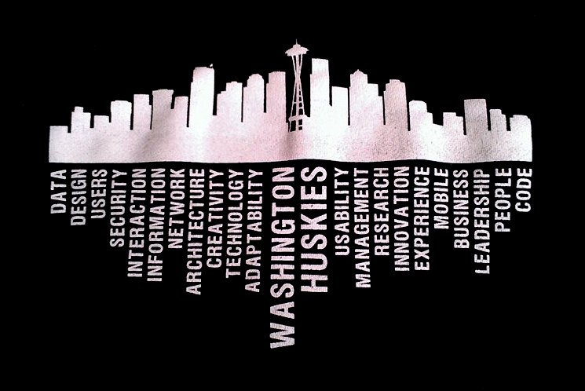
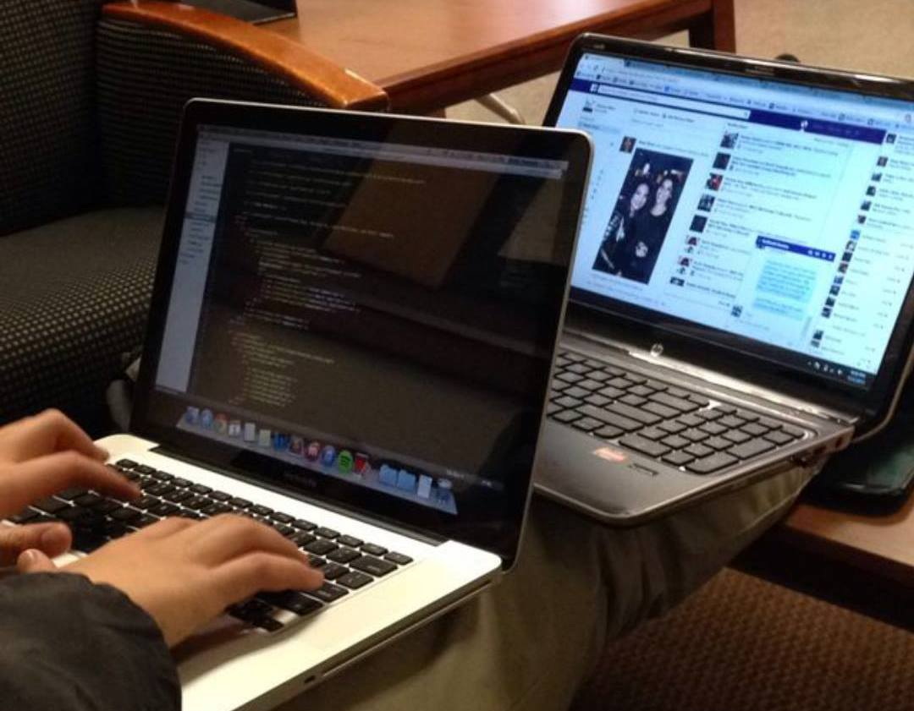
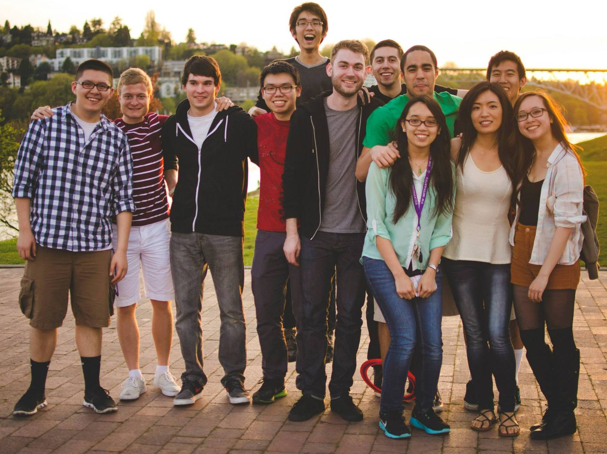
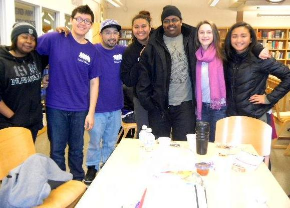
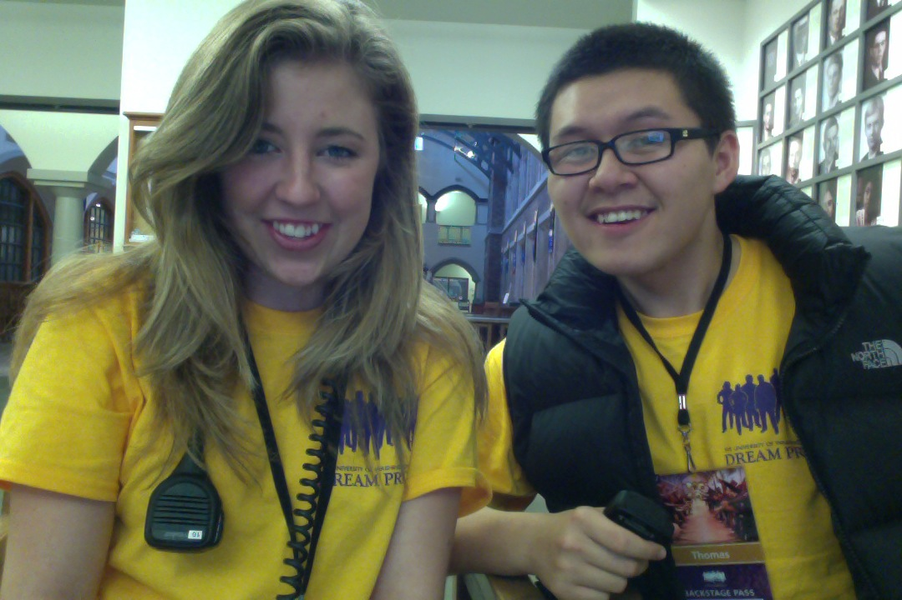
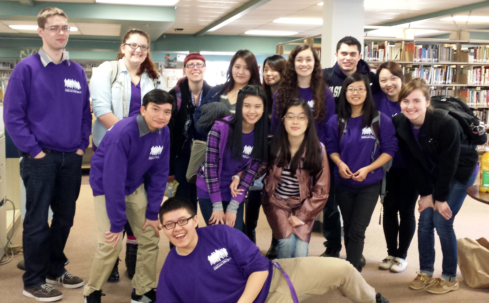
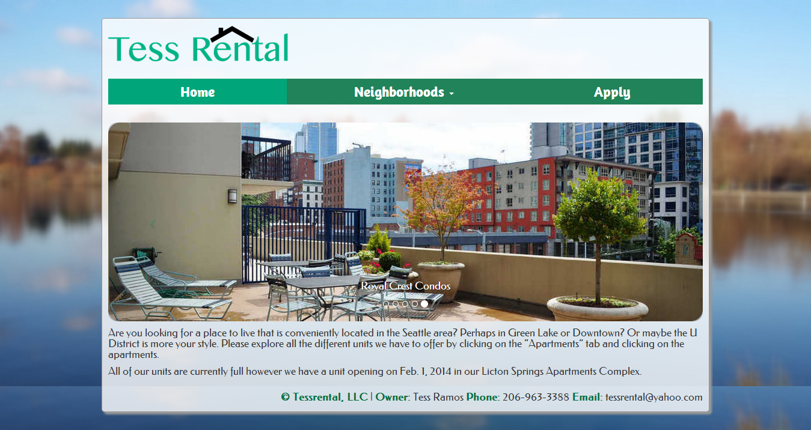
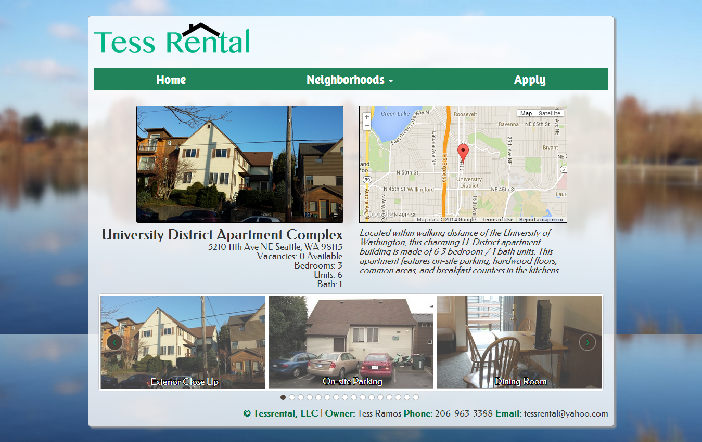
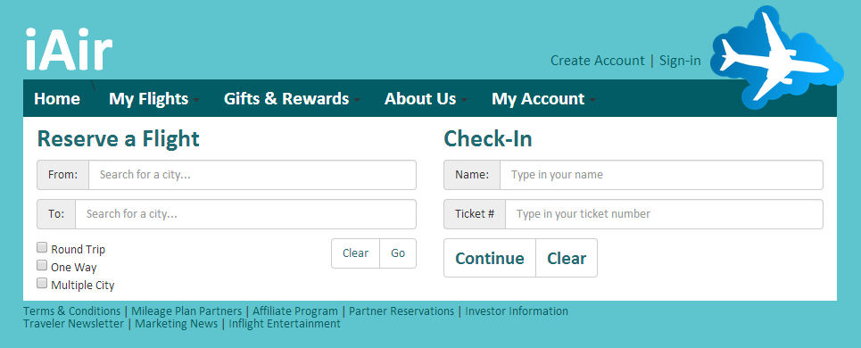
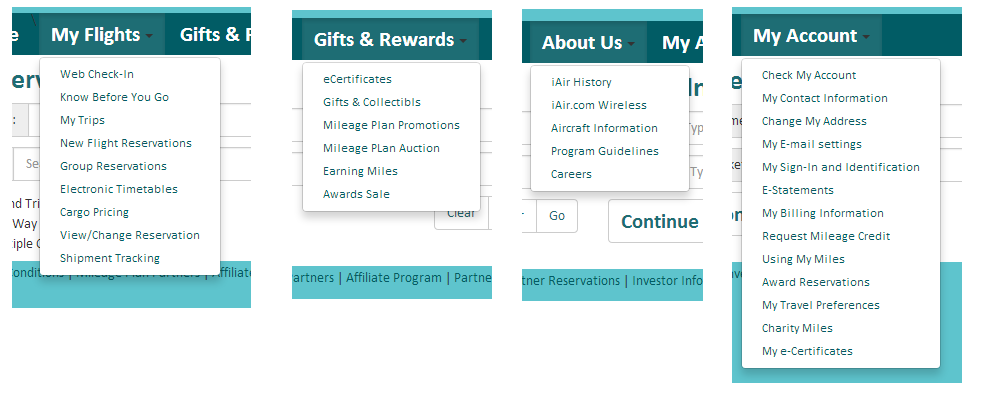

Who I Am
Informatics
Why?
I was exposed to the Informatics program during my sophomore year. I took the INFO 200: Intellectual Foundations of Informatics. and knew that I wanted to be in the program. Once in the program, I found that I enjoyed the aspect of the program that emphasizes group projects. I was able to explore the different roles in projects. I also am proud to say I am an Informatics major because of the focus the major has on understanding the user.
Goals
After taking the classes in the program, I developed a love for web programming and design. I knew I liked web designer when I took INFO 343: Client-side Web Development. In this class I learned HTML, CSS, and some Javascript. I have also taken INFO 360: Design Thinking, where I have really enjoyed learning about different design approaches to appeal to users. I hope to continue learning about design. I am currently taking INFO 424: Information Visualization, I have learned Adobe Illustrator and am now able to make infographics.
Community
In the Informatics program, I have enjoyed the that it emphasisez getting to know your classmates. Through the various group projects, I have learned to value the significance of communication between teammates. With these group projects, I have had a chance to experiment with different roles, from being an information architect, to web designer, and to being a project manager.
Dream Project
Mentorship
In High School, I was pretty oblivious to the idea of college. All it was to me was simply an IDEA. Being involved in the Dream Project as a mentee has allowed me access to many resources in helping me apply for college. Because of Dream Project, I managed to apply for, and attend the University of Washington. During my first two years as a UW student, I got involved as a mentor in the program. As a mentor I was able to give back and serve students from low-income, first generationf families apply for college and to make college a reality fo them. During my first year of mentorship, I mentored at Ingraham High School, then I mentored at Chief Sealth High School for my second year. These experiences has taught me about understanding people from various backgrounds. One of my most fulfilling accomplishments of my college career has been given the privilege to work with these students.
Events
While also being a mentor in the Dream Project, I have also been involved in the planning of two events: Spring Barbecue, and Admissions Workshop Weekend. Both of these events were organized for over 300 mentors and over 600 high school students on the UW campus. For Spring Barbecue, I worked as the Tours Co-lead. In this position I led weekly orientation for tour guides, I planned tour routes, and organized tour guide schedules. For Admissions Workshop Weekend, I worked as the Student Recruitment Lead. For this position, I created promotional videos, made psoters, and led the student check-in tables. Throughout the planning of these events, I have learned how to coordinate amongst different committees as well as plan large-scale events.
High School Lead
For Dream Project, my biggest committment has been being a High School Lead. Since January of 2013, I have been a High School Lead for the Arts and Academics Academy High School in Burien. As a High School Lead, I led weekly quiz sections where I taught mentors mentorship skills in working with Dream Project mentees. I attend weekly meetings, created syllabi, planned weekly high school visits, organized food and transportation, and prepared the visit agendas. This role has been the hardest role in Dream Project for me so far because of the huge time committment, and also because of the huge impact I have on the mentors and mentees of the program. Although it has been the hardest role, I have developed immense leadership qualities through this position, such as being able to public speak, plan agendas, and lead engaging discussion sessions.
Portfolio
INFO 343: Web Technologies
Dawg Pizza Website
For my first major homework assignment for this class, I was given a hypothetical job as a web developer for a pizzeria. The pizzeria is located near UW, and I was supposed to design the website with the idea that this website would be targetted towards college students.
For this second interation of the website, we had to learn how to include an embedded video on our site. We also learned about using CSS frameworks, so I used Bootstrap to make this website as well. I also redisgned it with an additional purple color to attract to UW students, and to change the background.
In this new iteration, the challenge was to learn how to template the HTML, so the data on the website would be driven by a database. I also redesigned with with a new color scheme and just sticking to purple.
For this final iteration, I had to learn to implement Javascript into my website. The Javascript implementation was done with the "Orders" page. We were assigned to also learn how to use JSON objects. This final iteration allowed for users to be able to go to the "Orders" page and add items to a shopping cart.
Tess Rentals
For my project for the class, I was grouped in a team where each person had their own specific role. The roles were: Developer, Information Architect, Designer, and Project Manager. I took on a dual role of a designer and information architect. An important aspect of this project was building a website for a real life client. In searching for a client, I found out that one of my friend's mom owns apartment complexes throughout various north Seattle neighborhoods. I met with my group every other week for meetings and work sessions where we would code and collaborate with each other. I also acted as the liaison to our client, so I was in constant email conversations with her throughout every aspect of the project. In this project, I definitely gained an understanding of how difficult, but fulfillinf it is working with a client and being able to produce a product that would satisfy them.
Homepage
Neighborhood Page
INFO 360: Design Thinking
iAir Website
For this project, I was given a prompt where a supposed local travel company wanted to redesign their website. I was given a list of over 30 terms that pertained to the website. I was supposed first supposed to create an affinity diagram based on all of the terms by making similar clusters. Then based on those clusters / labels, I was to design a homepage that incorporated those links grouped together. I created a low-fi sketch of the website, which I then produced a hi-fi webpage based on my low-fi sketch and affinity diagram.
iAir: Hi-Fi Prototype
 INFO 380: Information Systems and Analysis
Dream Project: DreamSIS Analysis
For this class, our main project was to analyze a client's database system and to give them recommendations based on our findings. For this project my team chose to analyze their DreamSIS system where the Dream Project keeps a record of all of their mentee information, as well as mentor information. For this project, I took on the role of Project Manager and the liaison for my group. Throughout this process we developed many diagrams to capture various aspects of the system, and formulated a final proposal document that entailed our process throughout this project that we sent to the Dream Project.
Final Proposal